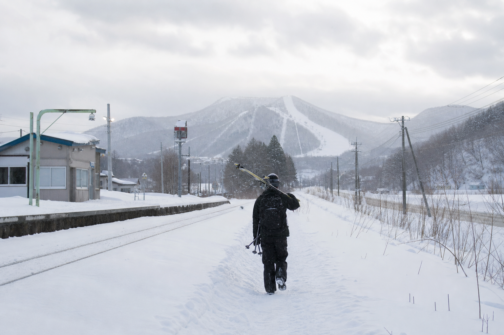
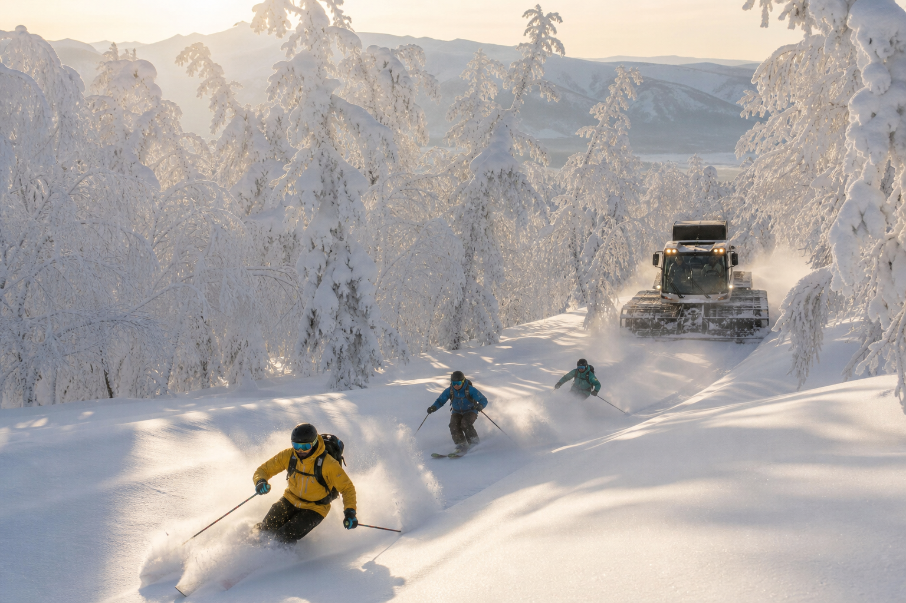
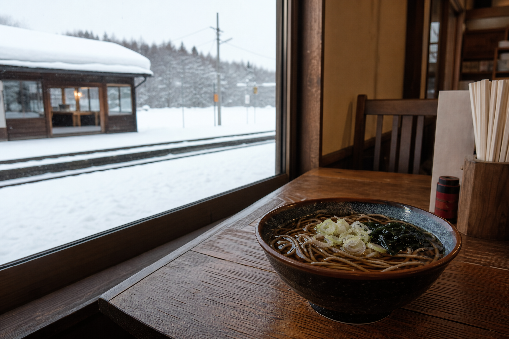

最軽量級ドライJapow × 上級者84%
ペアリフト1基・3コース・182m落差——規模はコンパクトでも、日本最軽量級のドライパウダーと上級者比率84%が示す「本物のJapow」。巨大リゾートの喧騒から外れた、音威子府村の隠れ宝石。
コース・雪質を見る北海道音威子府村 · 最小村535人
日本最軽量級のドライJapow——上級者84%が選ぶ、駅から歩ける秘境。
村民朝券 ¥1,300 Visitor Pass ¥3,500〜 上級者84% 駅徒歩15分更新 6/13 9:00
リフト
運行中
ペアリフト1基 · 182m落差
コース
3コース
上級者84% · 非混雑
雪質
最軽量Japow
ドライパウダー · 要確認
ナイター
17:00〜20:00
水・金・土

Station Walk
JR音威子府駅から徒歩約15分——北海道でも稀有な「電車で行けるスキー場」。国道40号線沿い、レンタカーなしでも上級者Japowに直結するマイクロツーリズムの拠点。最小村535人の静けさの中で、混雑のないドライパウダーを。
音威富士の魅力
ペアリフト1基・3コース・182m落差——規模はコンパクトでも、日本最軽量級のドライパウダーと上級者比率84%が示す「本物のJapow」。巨大リゾートの喧騒から外れた、音威子府村の隠れ宝石。
コース・雪質を見る人口535人——北海道で最も小さな村に位置する、人里離れたローカル・サンクチュアリ。待ち時間なし、貸切感のある滑走と、駅徒歩15分という稀有なアクセスを両立。
村のエコシステムを見るDual Pricing
村民・地元向け朝券¥1,300を維持しつつ、インバウンド・遠方来場者向けにOtoifuji Visitor Pass（¥3,500〜4,500）を設定——最小村の日常利用を守りながら、Japow体験のARPUを引き上げる二重料金モデル（LP案）。
Local
村民朝券 ¥1,300
Visitor
Visitor Pass ¥3,500〜4,500

Flagship Product
未踏のドライJapowへ雪上車でアクセス——音威富士の看板商品。上級者向けバックカントリー相当の体験を、安全なガイド付きCATツアーとしてパッケージ化。Visitor Pass・Tomte宿泊と組み合わせた高付加価値ライン（LP戦略案）。
CAT
CATツアー ¥40,000
84%上級者比率を活かしたフラッグシップ——リフト1基の限界を超え、客単価と差別化の核に。
CATツアーを予約FIS / SAJ Certified
FIS/SAJ認定のクロスカントリーコース——5km、7.5km、10kmの3距離。アルペンとは別軸の非動力型ウィンタースポーツ拠点として、上級者の滞在日数と村の消費を延伸。
Tomte Lodge
Tomte宿泊施設——定員80名、ワックスルーム完備。CATツアー・クロカン・ナイターを束ねるキャンプハブとして、最小村に宿泊需要を集中させるインフラ（LP案）。
Village Ecosystem
ゲレンデから駅方向へ徒歩15分——「黒い駅そば」の名物ランチ。滑走後は天塩川温泉パッケージで温活——最小村の食・温泉エコシステムをVisitor Passに統合。
音威子府駅近くの名物——コシのある黒い駅そば。駅徒歩圏の食体験が、電車来場者の滞在理由を増やす。
天塩川温泉との連携パッケージ——冷え切った身体を温め、連泊滞在の回復フェーズを完成させる。

Transit Japow
札幌・旭川方面からJRで音威子府へ——レンタカーなしの上級者Japowジャーニー。駅徒歩・黒い駅そば・天塩川温泉・Tomte連泊を一本化した半日〜2泊モデル。
STATION WALK · HIDDEN JAPOW01
JR音威子府駅
電車で到着。徒歩15分でゲレンデへ
02
Visitor Pass滑走
3コース182m · 最軽量ドライJapow
03
黒い駅そば
駅徒歩圏で名物ランチ
04
天塩川温泉
パッケージで温活・回復
05
Tomte連泊
ワックスルーム付き80床。CATツアー翌日へ
特集
上級者84%・ペアリフト1基・3コース182m——規模は小さくとも、日本最軽量級のドライパウダーが評価される理由。巨大リゾート圏内の混雑から一歩外れ、535人の最小村で貸切感のJapowを味わう位置づけ。
読む雪上車で未踏ゾーンへ——ガイド付きCATツアーの安全設計、上級者向けルート、Visitor Pass・Tomte連泊との組み合わせ。リフト1基の限界を超える高付加価値ラインの解説（LP戦略案）。
読むJR音威子府駅から徒歩15分の稀有なアクセス、FIS/SAJ認定クロカン（5/7.5/10km）、黒い駅そば、天塩川温泉、水金土ナイター（17:00〜20:00）——最小村535人の食・滑・泊を束ねた半日〜2泊周遊。
読むAccess
JR音威子府駅徒歩約15分 · 国道40号線沿い
TEL 01656-5-3305（スキー場 · シーズン中）
TEL 01656-5-3313（オフシーズン）